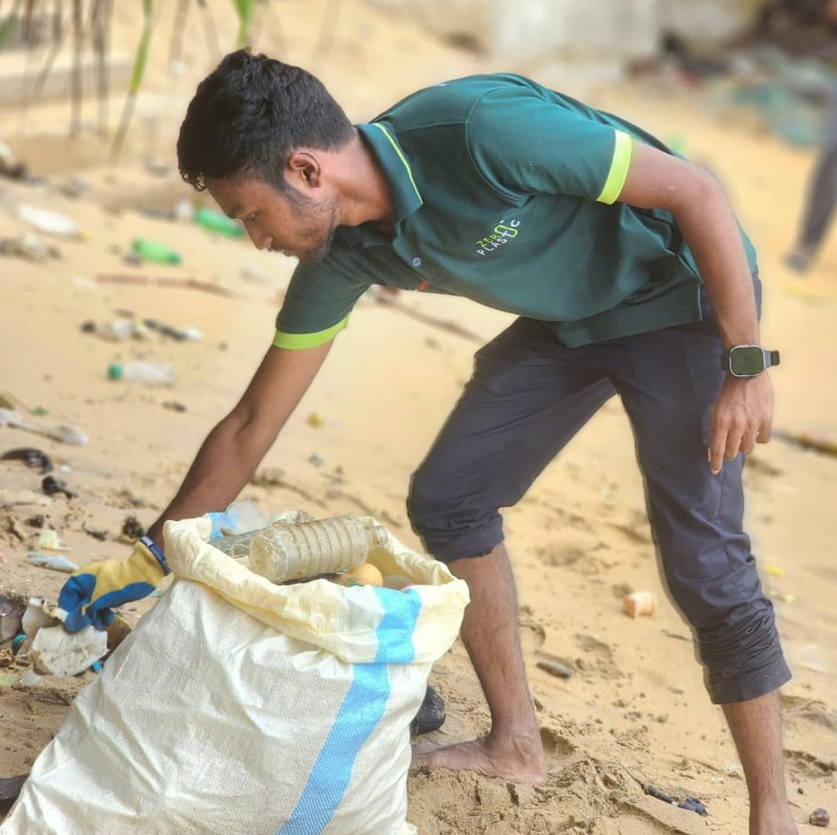

ABOUT ME
Growing up in Sri Lanka has shaped my curiosity about technology, people, and the world around me. I’m an IT for Business undergraduate at NIBM, interested in how digital tools can solve real problems and help businesses work better.
My interests include business analysis, project management, information systems, data analysis, and artificial intelligence. I enjoy learning by building practical projects, exploring how AI and machine learning can be applied, and turning ideas into useful solutions.
Beyond my studies, I take part in student and community activities, including environmental awareness initiatives and event teams. These experiences help me develop communication, teamwork, and planning skills while contributing to causes that matter.
Outside technology, I enjoy landscape photography, event videography, and editing visual stories. I’m always looking for opportunities to learn, collaborate, and connect technology with real-world impact.
DOWNLOAD CV ↗
